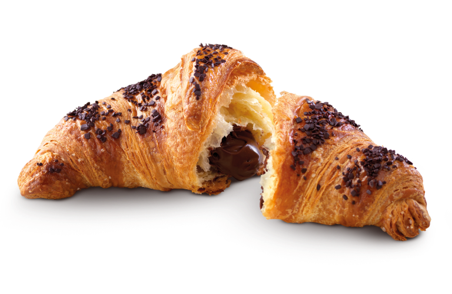
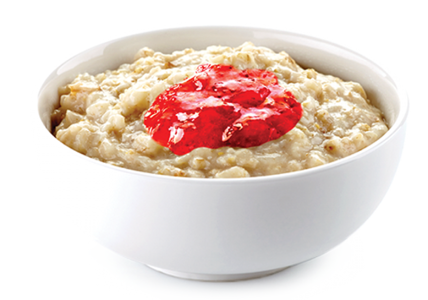

Colazioni nel mondo
La colazione è il primo pasto della giornata, considerato in molte culture anche il più importante.
Ma come viene affrontata la colazione nel resto del mondo?
Stati Uniti
Negli stati uniti la giornata inizia con un piatto di soffici e dorati pancake, accompagnati solitamente da frutti rossi, sciroppo d'acero, una tazza di latte o comunemente da un espresso.
Francia
Negli stati uniti la giornata inizia con un piatto di soffici e dorati pancake, accompagnati solitamente da frutti rossi, sciroppo d'acero, una tazza di latte o comunemente da un espresso.

Islanda
Per contrastare buio e freddo, nulla meglio di una colazione calda e abbondante come una zuppa dolce di fiocchi d’avena o una ciotola abbondante di porridge accompagnato da cereali, frutta o scaglie di cioccolato.

Giappone
La colazione tradizionale giapponese, quasi sempre salata, prevede zuppa calda di miso e tsukemono, ovvero i sottaceti, riso al vapore in bianco e pesce alla piastra.